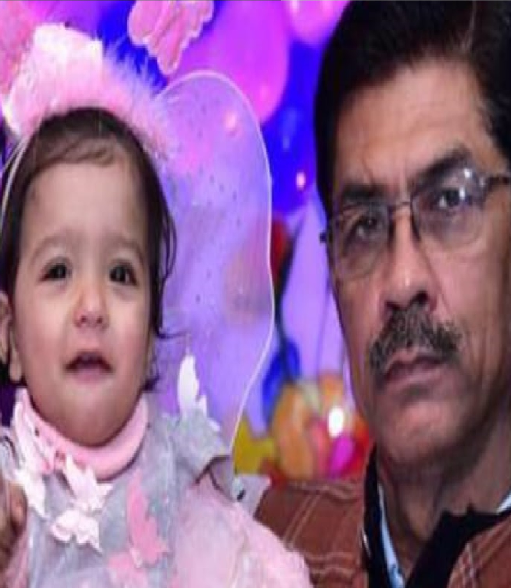
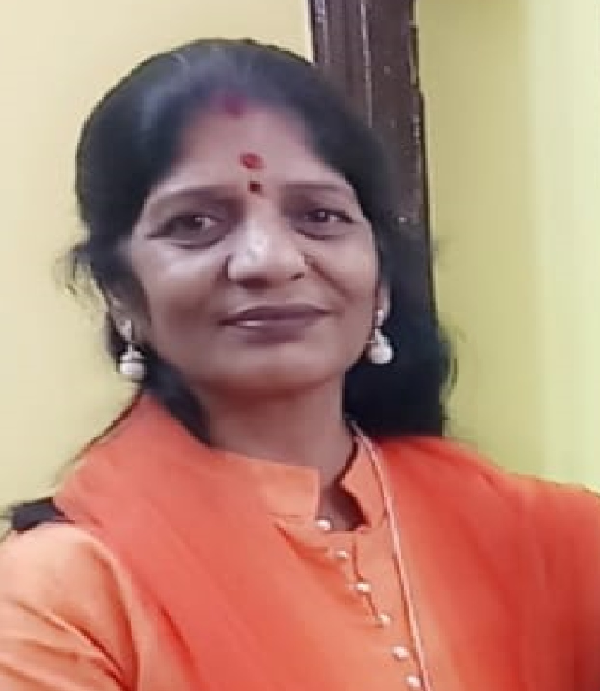
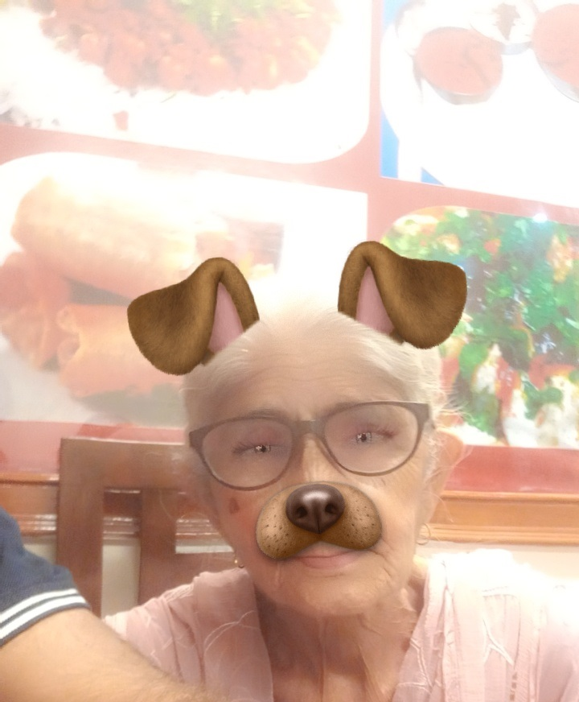
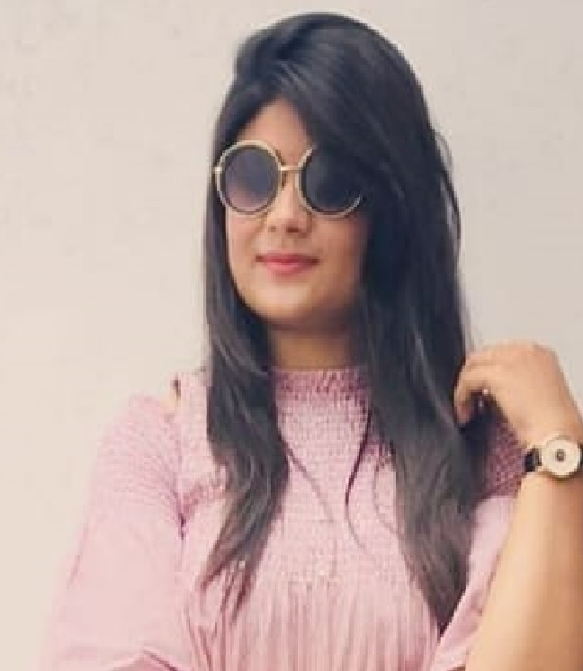
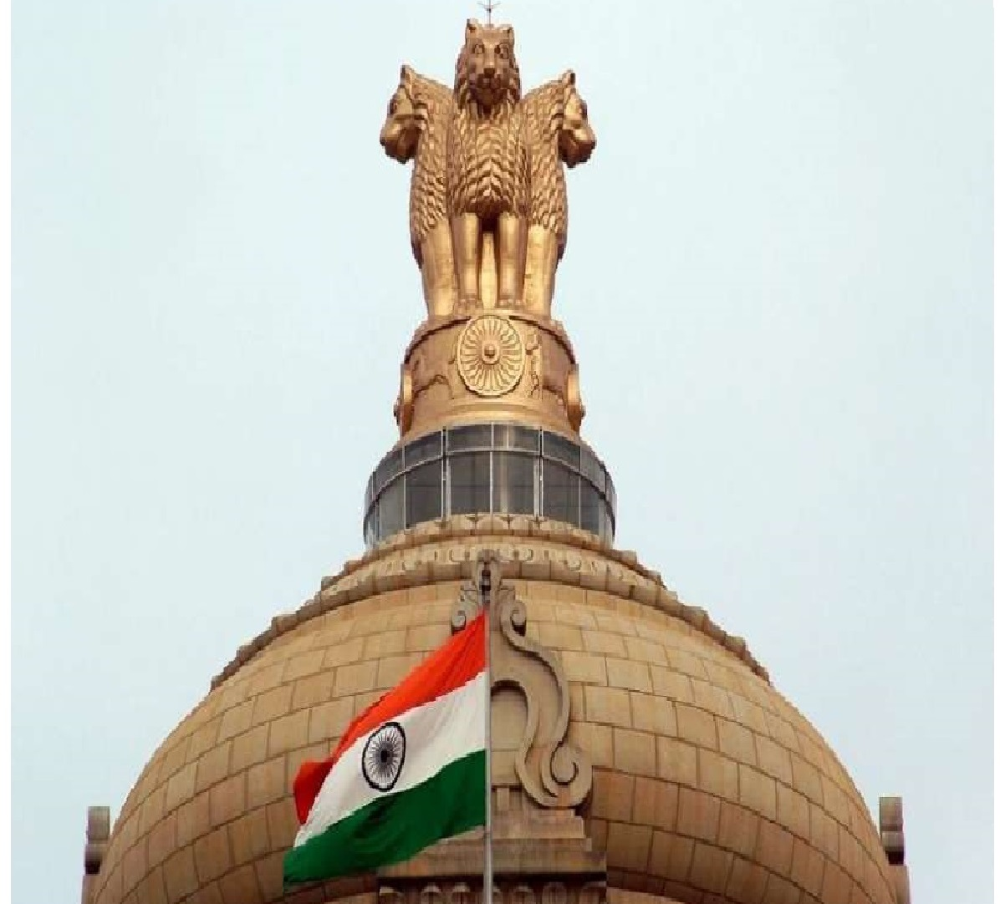
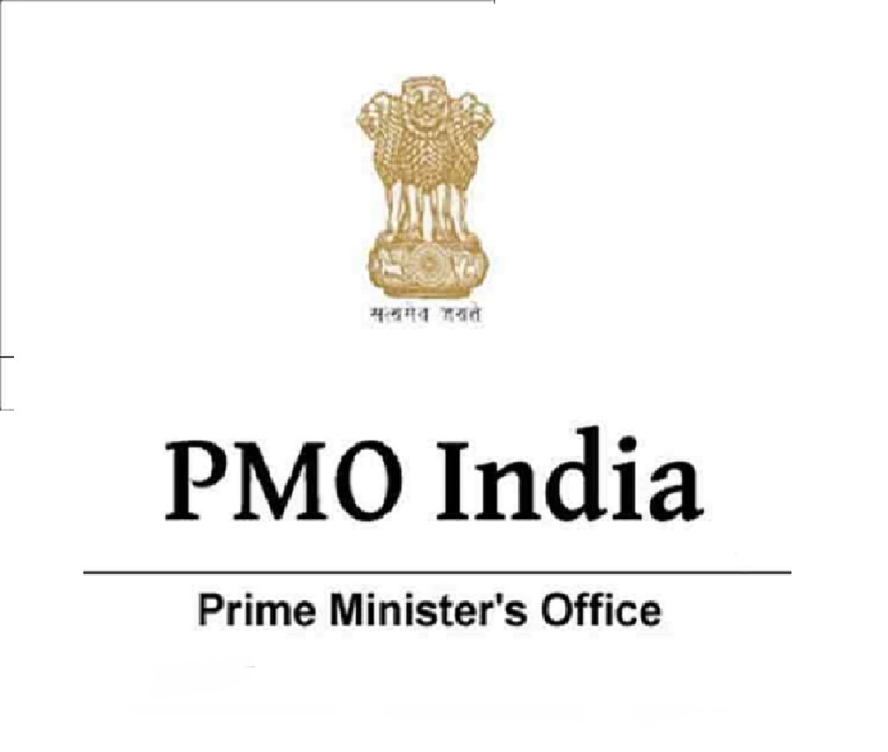

FAMILY




SANJAY BHALLAMy father is like a friend to me. He loves me at all times. He teaches me all the values and morals I must live by. And he himself lives by all the values. He believes in practicing what he preaches. So I find my father very honest. And he never finds it difficult to be that way.
PRAMILA BHALLAA mother is the person who plays most important role in every one’s life. No one can take place of her. Being a mother is the best feeling a woman can have ever in her whole life. Mother is the one who can do her best for giving her child each and every comfort. At different stages, a child tries to learn life’s lessons under his or her mother’s guidance. Mother’s love for her child is beyond any one’s expectations. Mother can easily identify each desire of her child even when her child is not able to speak properly.
VIMALA BHALLAMy grandmother is quite an old lady. She has already crossed sixty. Her years have now bent her back a little but have not affected her activities. She is tall and thin. She is gray haired and her humble and affectionate face is full of wrinkles. Her eye-sight, however, is quite good and she can read without spectacles.
She is a religious lady. But her devotion to religion and God does not disturb rest of the family. She is the first to leave her bed in the morning. Before we get up, she has already taken her bath with fresh water. Immediately after bath, she goes to the nearby temple. We eagerly wait for her to come back, for she brings sweets for us
KSHAMA BHALLANot everybody is lucky to have sisters, but I am. I have a little sister. She is Pranky, naughty, stubborn, short-tempered, at the same time, humorous, loving and caring. She truly is one of a kind and I love her a lot.
GOALS


B.TECHI am doing currently B.Tech from AMITY UNIVERSITY then after that I want to work in IT sector for sometimes and paralley I start prepration of UPSC.
UPSCAfter completing my B.TECH from MAITY UNIVERSITY I start prepartion for UPSC because It is my GRANDPAA dream that one of his child become an government offficer so I want to complete my GRANDPAA dream and I want to become an IAS Officer with AIR-1st.
MEDICALAfter selecting in IAS I start my work in research work becuse I am engg. and my like Biology so much so that I work in Mdical Field because If science and medical are mixed together It work for human welfare. And I want to discover a system that will decete CANCER CELL growing or not if they start growing it inform us so that it will cure at 1st stage.
PMO OFFICEMy last goal in life work in PMO OFFICE as PM sectatory.